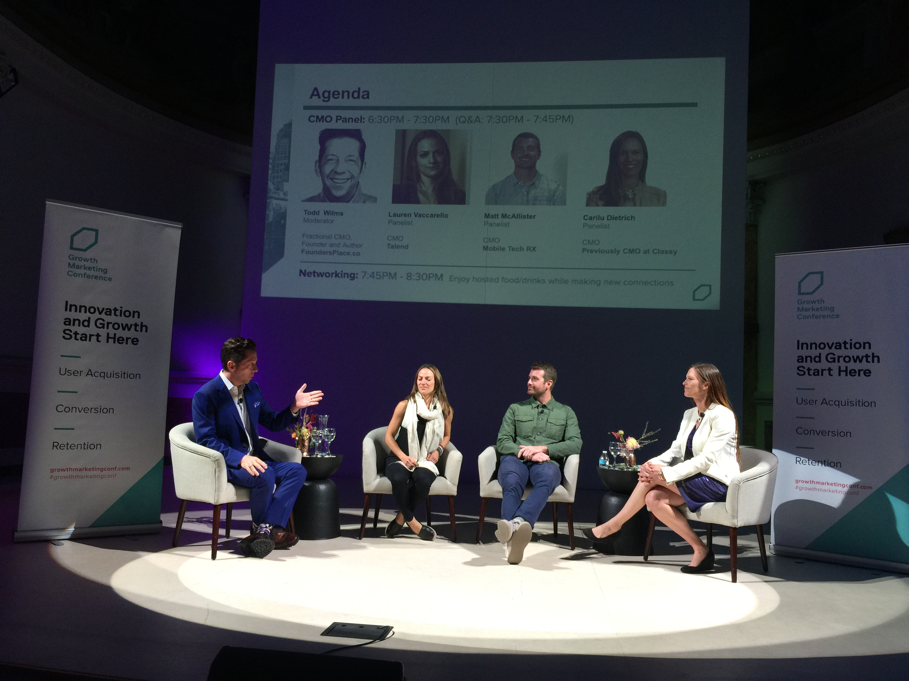

Panelist
- Todd Wilms, Fractional
- Lauren Vaccarello, Talend
- Matt McAllister, Mobile Tech RX
- Carilu Dietrich, Classy
Key take aways of being a CMO
- Counter-intuitively - the higher you are in the hierarchy the more silo-ed you become
average tenure 18 months
- Alignment is the most important thing
your primary team is the executive team
- Always figure out what the CEO is reading
- Start thinking about needs of board, investors and C-Suit
- strategic mindset:
start thinking in terms of framework
step away from the minute details
- it is the job of the VP of marketing to fill in the details within the framework
- look across various functions for solutions
- move beyond your own functional area when required
- as opposed to marketing which is
minding the day to day activities
- moving the levers to drive conversion rates
- Growth mindset
be ready to go where the business needs you
- Be hypothesis driven
- market focus
actively monitor the markets
define a new category
- size of market
- competitors
- disruptors
- read earnings report of company and competitors
- read more Wall Street Journal
- Understand the P&L so as to understand how money is flowing through the company
- Important allies
Someone on the sales team
- Someone on the finance team
they know where money comes from and where money is spent
- Brand values
clarify the narrative for your team to do their job
- quite similar to core values
- the personality that will dictate how interaction occurs at all touch points
- Creating the customer communications play book
- Analytics
on users
- secondary data from researchers
- to gain influence to own the P&L
- Perpetual learner
The new paradigm
- AI disruption: Department of defense using AI to parse through PHD thesis to figure out new technology to defend against
- start utilizing the services of coaches for private help as the stakes are high
- Marketing
demand generation
- digital marketing
- On hiring
ask about topics not related to their area of interest
- see if they crumble under pressue
- how did they turn a crisis into an opportunity.
Related readings
- *The hard thing about hard things*, Ben Horrowitz
- *Beyond Product*, Todd Wilms